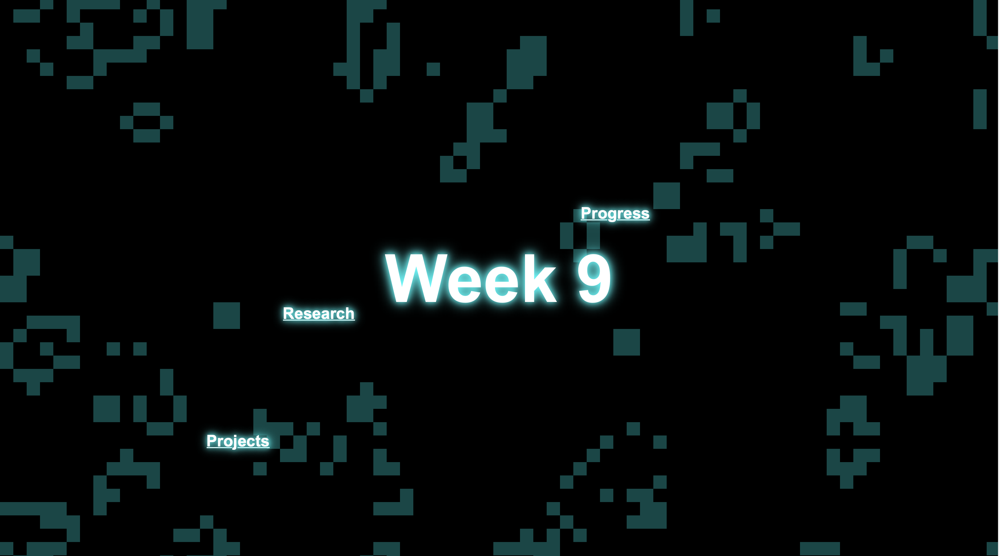

I picked up the pace a bit and started working
on individual page layouts. Instead of keeping everything uniform, I wanted
each project to have its own little vibe. For example, on the sound project
page, I added a sound wave animation that actually reacts to audio
input.. felt like a fun way to make the page sound like itself.
For the light sensor project, I went with stars and a glowing trail—something
a bit dreamy and reactive, just like the project itself. I also wrapped
up the layouts for the progress and research pages. Nothing too fancy, but
enough to feel like they belong in the same universe while still doing their
own thing.

I made the background for week 9 landing page
and got inspiration from
P5.js Website
. Then I finished adding all the content and made some final touches to the website.